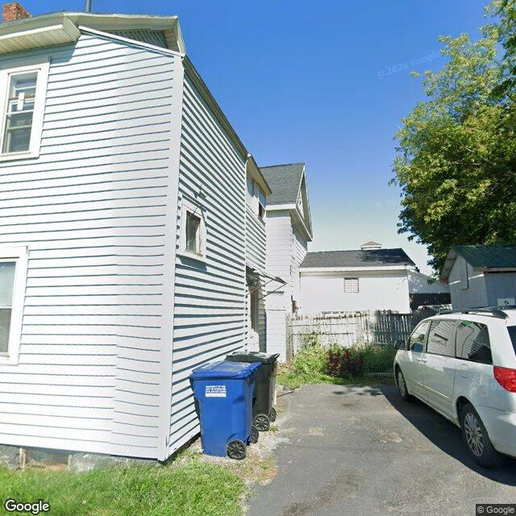

Property entry
812 Wolf St & Pennsylvania Av
Published 2026-06-18T13:06:25+00:00
Parcel key: 003-10-010

none · highAI image read
The visible exterior of the property at 812 WOLF ST & PENNSYLVANIA AV appears well-maintained with a clean and orderly appearance.
Property type guess: single-family
Visible conditions
- The siding is in good condition, without visible damage or disrepair.
Condition scores
- Roof
- good
- Siding Or Facade
- good
- Windows Doors
- good
- Porch Or Entry
- good
- Yard Or Lot
- good
- Trash Debris
- none_visible
- Vegetation Overgrowth
- none_visible
Visible flags
- Boarded Windows Or Doors
- no
- Fire Damage Visible
- no
- Structural Damage Visible
- no
- Vacancy Signs Visible
- yes
- Active Construction Visible
- no
Possible image-only flags
- The image is clear and appears to be an accurate representation of the property's visible exterior. There are no obvious signs of issues not already reflected in known public records.
AI review boxes
- none: No issues are visible in this portion of the image.
Review reasons
- Possible image-only issue
- vacancy signs visible
Image quality
- Available
- True
- Bytes
- 95553
- Needs Rerun
- False
['The image appears to be current and provides a clear view of the property, with no obstructions or distortions that would hinder accurate assessment.']
ACS tract context
Census Tract 2; Onondaga County; New York
- Total population
- 3511
- Median household income
- 51848
- Poverty rate
- 28.1
- Housing units
- 1686
- Vacancy rate
- 14.7
- Renter-occupied share
- 50.1
- Median gross rent
- 146700
OpenStreetMap nearby
60 meter search radius
Summary
- 17 mapped building footprints
- 3 named features
- 1 amenity: fast_food
- 1 amenity: fuel
- 1 shop: laundry
Notable mapped features
- Mirabitonode #5167889510
- Colonial Laundromatnode #5197066564
- Little Caesarsnode #5197066565
Vacant properties 0
No matching records found in this feed.
Rental registry 0
No matching records found in this feed.
Code violations 0
No matching records found in this feed.
Unfit properties 0
No matching records found in this feed.